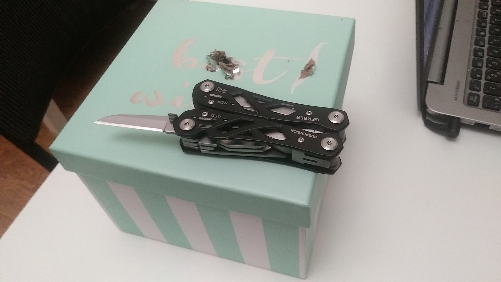
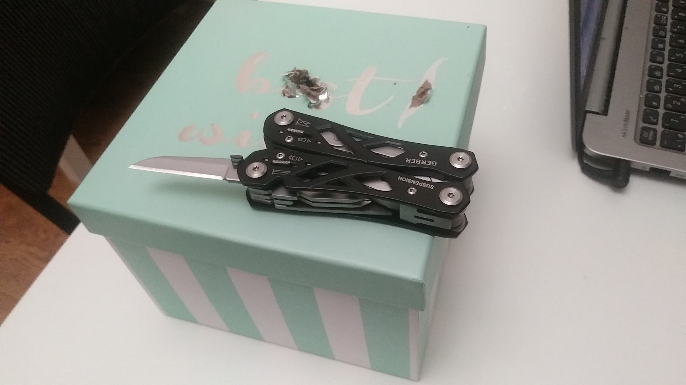
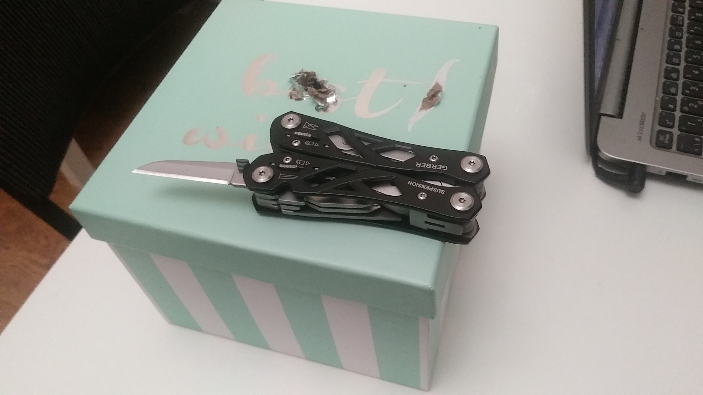

Prototype Images
 

Lilia Isabel Aguirre Lugo
Jonah Mckay
Elio Bidinost
CART 360
November 5, 2021
Prototype Documentation
Prototyping is key to creating a functional system, but before we started our own prototype there were a couple of things that we had to take into consideration. First, we had to look at the feedback that we received on our project. The main criticism we received on our proposed idea was that our toy seemed annoying and not likely to help a person calm down. A suggestion we were given was to create something that would soothe an overwhelmed person through sounds. With that in mind, instead of making something that would copy the user, we decided to make something that would take speech from the user and turn it into soothing music. Since we decided to use speech recognition, we decided to use Raspberry Pi for our project because we were recommended to use this single board computer if we wanted to work with speech. By this time, we have realized that our project has taken a different turn. Initially, we wanted to create a toy that would copy the user's sounds to encourage them to express themselves vocally, but have now changed it into a device that would turn a person's words into music to make them feel comfortable when speaking to themselves. This leads us to how we want to present our project. We dropped the idea of the toy and we thought of two alternative options: a music box or a pillow. We like the idea of the pillow because it fits with the idea of creating a calm and soothing environment for the user, but, for the prototype, we decided to use a box since it would be easier to handle while presenting it. Overall, our initial project idea has definitely changed into something different but its intention to help people express themselves with the goal of helping them calm down is still there, just with a different approach.
When building the prototype, we identified some key components such as a Raspberry Pi computer, an SD card for memory, a microphone, a speaker and of course a breadboard and wires. We thought of also including an accelerometer and LEDs to make the device more interesting by making it light up when picked up, but there were a couple things stopping us. One was of course time, we did not want to spend too much time on a bonus feature, but also, the Raspberry Pi cannot handle analog input on its own, so to allow it to accept an analog accelerometer, it would need a converter. Instead of shaking the device to engage the device, the user presses a small button in the prototype. We thought it would be wise to focus on the main function of our project, which is to turn speech into music. Because we are using speech and playing music, we connected a small microphone to one of the USB ports available so that the Raspberry Pi can recognize speech and we connected a speaker to the audio-jack to allow the music to play. In addition, we of course need power, which will come from a power outlet and connect to the Raspberry Pi by a micro-USB. Furthermore, the box chosen has to be big enough to contain everything and we had to put in a hole that would allow the device to be plugged to a power outlet. Knowing what elements we wanted to use for the device, it came time to work on the code. The challenging part of this project was getting the audio to work on the Raspberry Pi. The programming language used was Python, but the sound library was incompatible with either the speaker or Raspberry Pi. So to play sound and record it the code had to call shell commands and run them asynchronously. Although getting the audio to play was tricky, generating the sound caused less problems. The library used for sound generation is called Pippi. It is a library that is built around musical sound generation. In the prototype, it takes a wave file and it samples and modifies it to create a longer soundscape. For our project, we want to create soothing sounds and currently our prototype does create a relaxing sound, but it is not yet right and we could have only known that through prototyping and with more time and test, we should hopefully get ideal results. Critically, the sound played does not correspond to the sound recorded and is a placeholder for prototyping purposes, although it does have some procedurally generated randomization. Another issue that arose was that the speaker could not turn on with the Raspberry Pi automatically because it has its own battery. This meant that they both had to be turned on separately, which is inconvenient when handling it. Knowing this, we now know that if we want them to turn on together we have to either ruin the speaker and make the Raspberry Pi turn it on with its GPIO pins on bootup, or, to make our life more simple, replace the speaker. Knowing everything we know about our prototype, we have concluded that is is a medium fidelity prototype because, although it does not look very presentable and the sounds it makes are not yet how we expected them to be, it is still a very functionable prototype that gives an idea of what we are trying to create and it is a good starting point to get feedback on an build on it.
